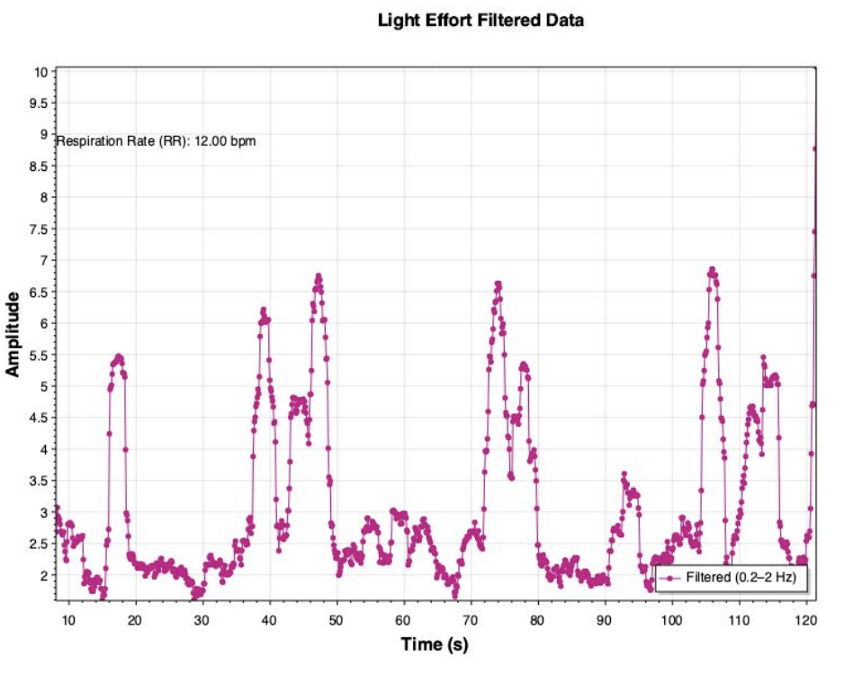
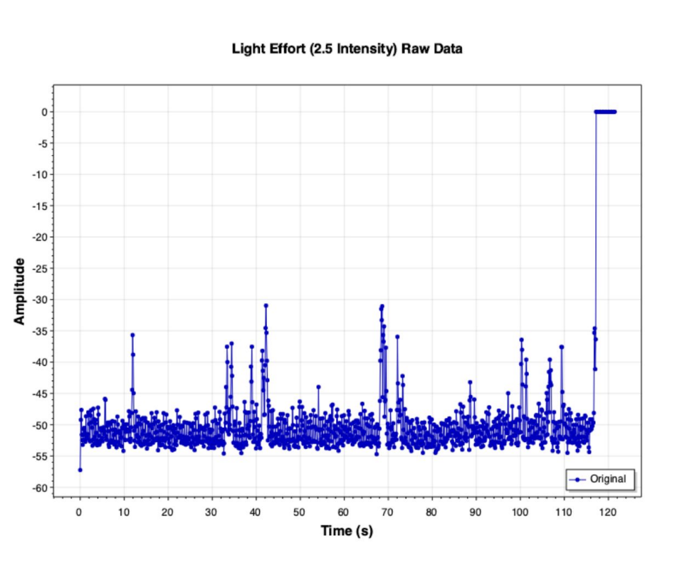

— UX / UI / Tech Research
Can a smartphone microphone estimate your fitness level? We tested whether breathing audio captured on an everyday device could accurately measure Respiratory Rate and predict VO₂ max — no lab equipment required.
— 01
Measuring aerobic fitness accurately today requires either expensive lab equipment (the gold-standard Cardiopulmonary Exercise Test) or consumer wearables that carry a 10–15% error rate and use opaque, inconsistent algorithms.
This creates a gap: most people don't have access to reliable, low-cost fitness monitoring. Smartwatches and smart rings help, but they're still expensive — and their VO₂ max estimates vary significantly by brand and model.
Our question: could a smartphone microphone — something nearly everyone already owns — serve as a viable tool for estimating Respiratory Rate and, by extension, aerobic fitness?
— 02
We grounded our approach in existing literature before designing the study. Key findings that shaped our methodology:
The gap we identified: no existing study had tested whether a simple in-ear Bluetooth microphone paired with a smartphone could estimate RR with clinical-grade accuracy during everyday walking intensities.
— 03
We designed a controlled protocol that balanced scientific rigor with practical constraints:
This change — recognizing a flaw in the original plan and adapting — was one of the most valuable lessons of the project.
— 04
The signal processing pipeline was built in C# (.NET Core) using CsvHelper, NWaves, and ScottPlot packages, with additional analysis in Python.
Applied a Finite Impulse Response (FIR) filter to isolate breathing frequencies between 0.2–2Hz, removing low-frequency drift and high-frequency noise from movement and wind.
Applied a sliding Root Mean Square window across the signal to normalize sharp peaks, making individual breaths easier to detect reliably.
A peak detection algorithm identified individual breath cycles within the filtered signal. A minimum inter-breath interval was enforced to eliminate false positives. Peak count was converted to breaths per minute.
Used the Jackson et al. non-exercise model incorporating age, gender, BMI, and Physical Activity Level. RR was added as an additional scaling factor, with a lower boundary to prevent negative values.
The difference between raw and processed audio is significant — here's what the signal looks like before and after the filtering pipeline:

Raw amplitude values captured directly from the Bluetooth microphone via phyphox. The signal contains significant noise from movement, wind, and environmental interference — individual breaths are not distinguishable.

The same signal after applying the band-pass filter (0.2–2Hz) and moving RMS smoothing. Individual breath cycles are now clearly visible as distinct peaks, allowing the peak detection algorithm to count RR accurately.
— 05
All four participants achieved RR estimates well within the target accuracy range of ±3–5 BPM. The overall average difference across all participants was 0.73 BPM.
| Participant | Light (GT vs. Est.) | Moderate (GT vs. Est.) | Heavy (GT vs. Est.) | Avg. Diff. |
|---|---|---|---|---|
| Camille | 11 vs. 12.40 | 15 vs. 16.36 | 19 vs. 19.83 | +1.20 BPM |
| Joseph | 13 vs. 14.50 | 17 vs. 17.98 | 21 vs. 22.18 | +1.22 BPM |
| Alyssa | 12 vs. 12.00 | 16 vs. 15.93 | 22 vs. 21.36 | −0.24 BPM |
| Thandar | 10 vs. 10.34 | 14 vs. 15.12 | 19 vs. 19.67 | +0.24 BPM |
GT = Ground Truth (manually counted). Est. = Algorithm estimate. All values in breaths per minute (BPM).
— 06
— 07
This project reinforced that the most interesting problems sit at the intersection of disciplines. The signal processing work required thinking like an engineer; the study design required thinking like a researcher; and communicating the results clearly required thinking like a designer.
The result that stood out most wasn't the technology — it was the realization that a $0 microphone most people already carry could produce estimates within a fraction of a BPM of ground truth. That has real implications for accessible health monitoring in low-resource settings.
View Full Presentation (PDF) →